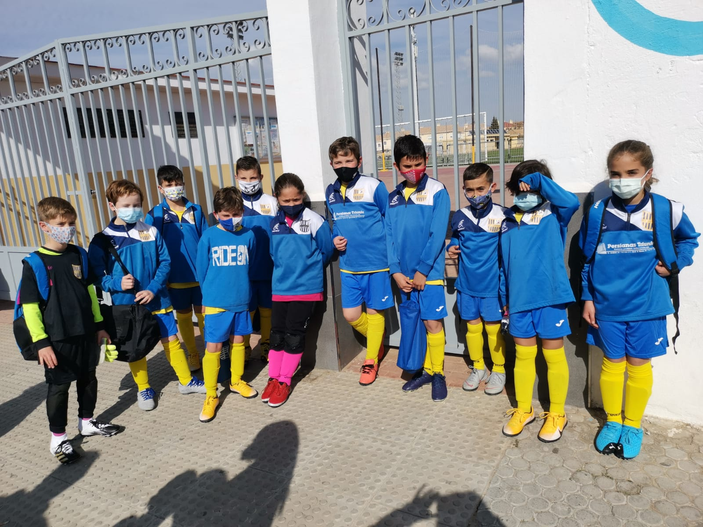
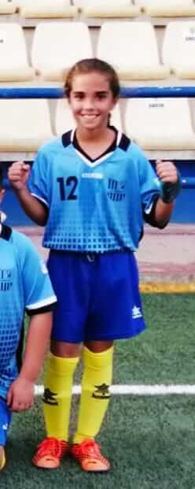
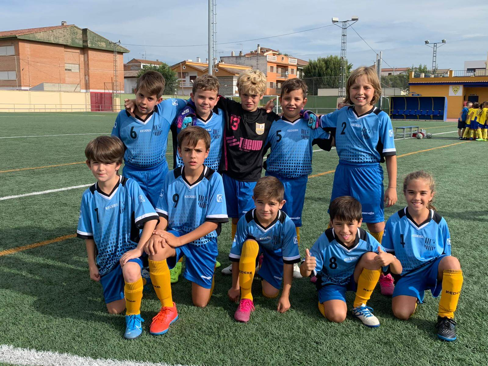
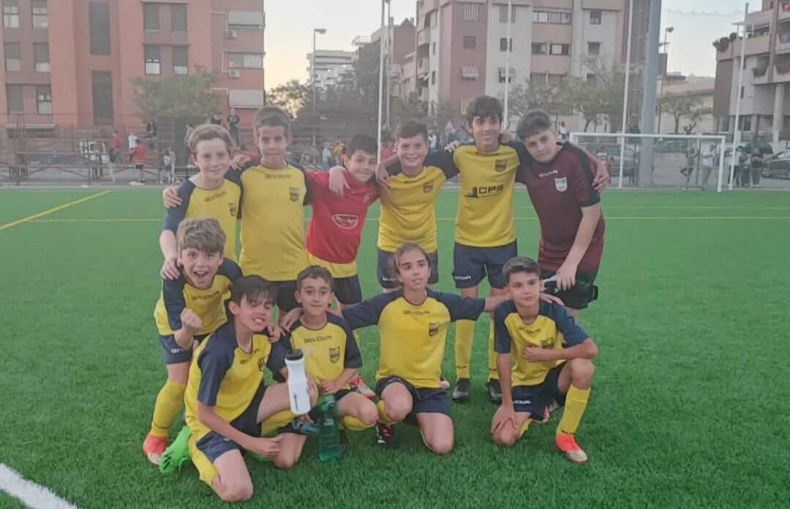
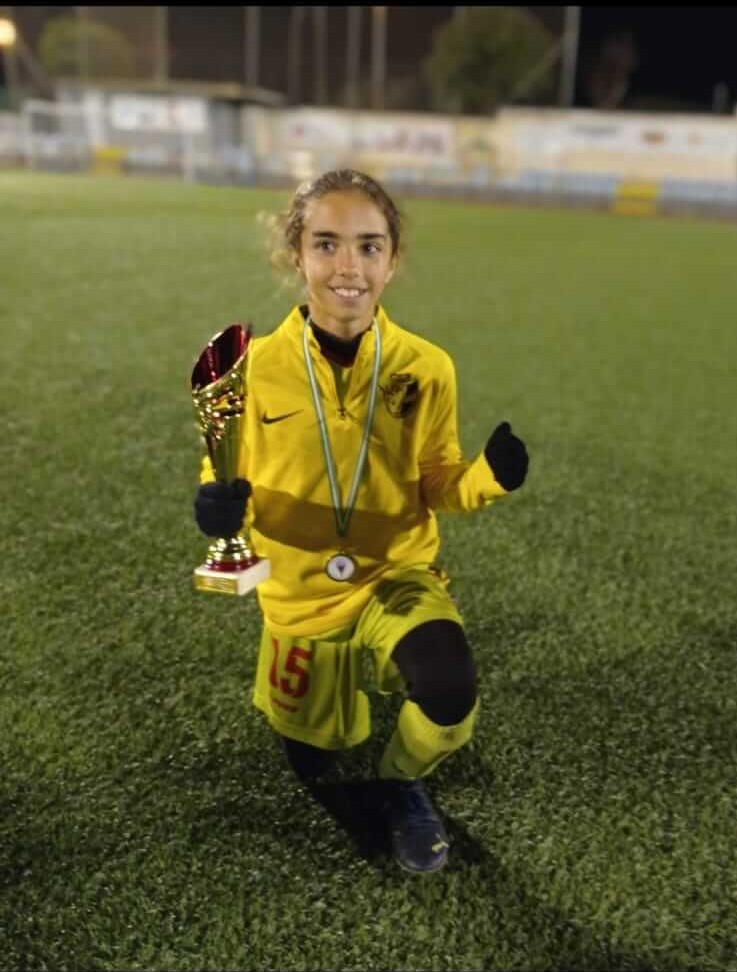
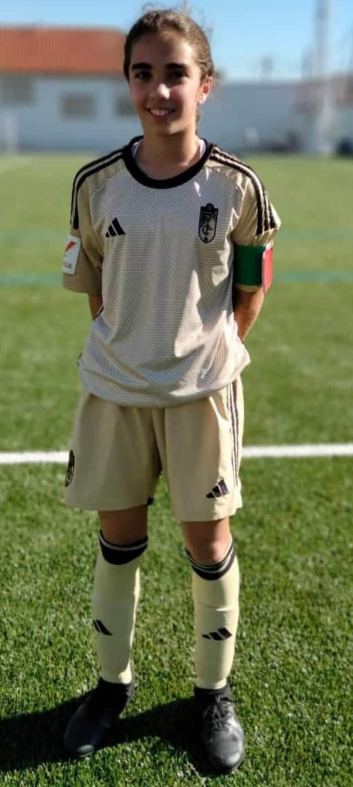
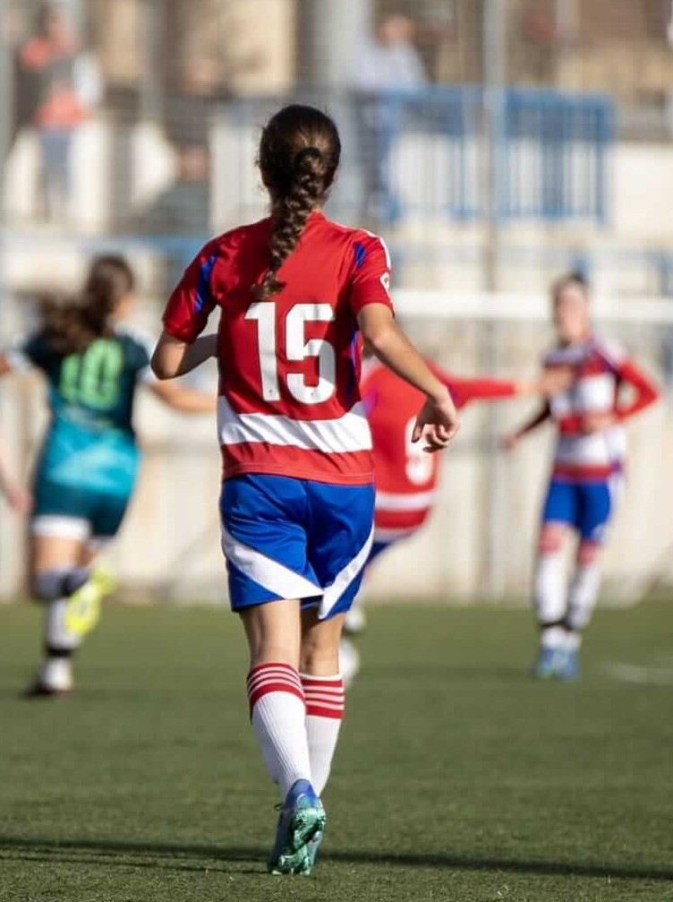
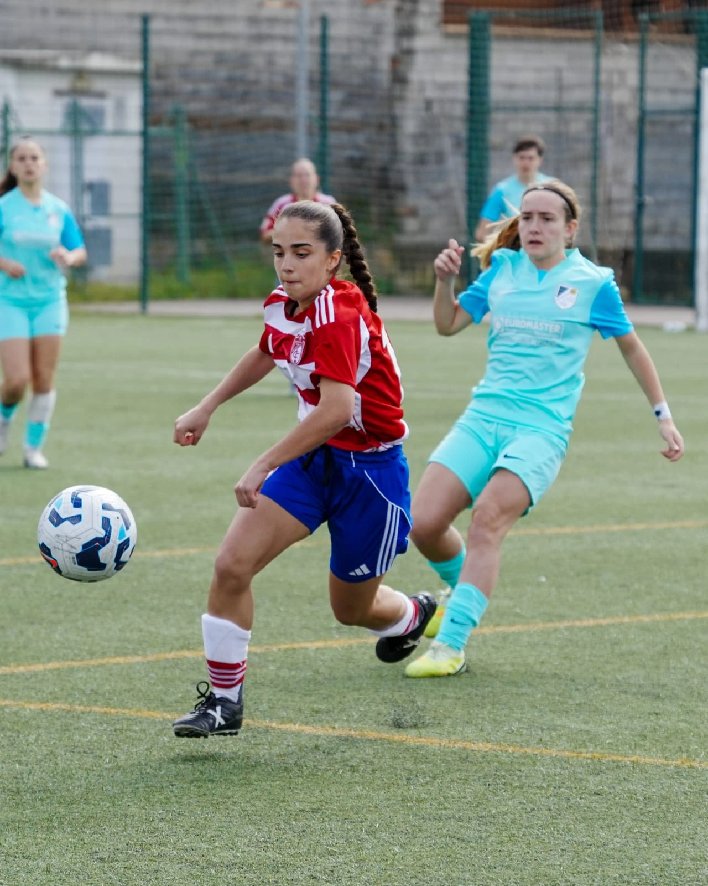

9 de Septiembre de 2018
Mi Primera Equipación
Mi primera equipación con mi número de la suerte, la niña bonita. El inicio de todo.
Entradas especiales sobre sus logros, emociones y momentos únicos
Mi primera equipación con mi número de la suerte, la niña bonita. El inicio de todo.

Mi primer equipo de fútbol. La única niña entre todos ellos, y aun así, parte del equipo desde el primer día.

Mi primera publicación en un periódico. Ver mi nombre impreso fue algo que nunca olvidaré.

Mi primer torneo, donde tuve que jugar de jugadora y de portera. ¡Aprendí que hay que estar preparada para todo!

El momento más especial de mi primera temporada. Campeona de liga con el Ogíjares 89 C.F. ¡Qué sensación tan increíble!

3ª Andaluza Benjamín (liga de niños). Siguiendo creciendo, partido a partido.


4ª Andaluza Alevín (liga de niños). Primera convocatoria con la Selección Granadina, aunque una lesión me impidió participar.


2ª Andaluza Alevín. Este año sí pude representar a Granada en la Copa de Andalucía. Un orgullo enorme.

4ª Andaluza Infantil. Fiché por el Granada C.F. S.A.D. y fui nombrada capitana. Subcampeonas de liga con 4 goles aportados.

Me subieron al Cadete Femenino de 1ª Andaluza siendo todavía infantil. Titular en todos los partidos. ¡11 goles en la temporada!
Durante mi convocatoria con la Selección Granadina Sub-14, no solo fui una de las capitanas: también marqué un gol ante Jaén. Un momento que jamás olvidaré.

Otro año más defendiendo los colores del Granada C.F. S.A.D. en 1ª Andaluza Cadete Femenino. Convocada con la Selección Granadina Sub-16.